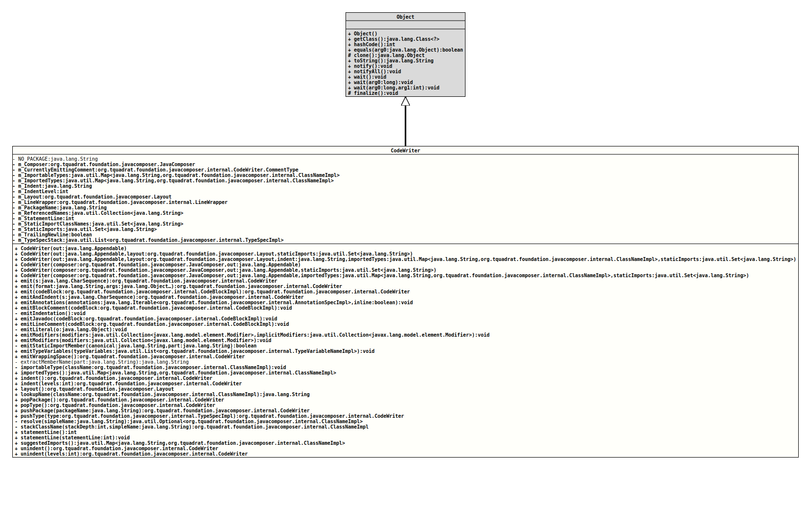

Class CodeWriter
java.lang.Object
org.tquadrat.foundation.javacomposer.internal.CodeWriter
@ClassVersion(sourceVersion="$Id: CodeWriter.java 1043 2023-01-01 11:27:56Z tquadrat $")
@API(status=INTERNAL,
since="0.0.5")
public final class CodeWriter
extends Object
Converts a
JavaFile
to a string suitable to both human- and javac-consumption. This honours
imports, indentation, and deferred variable names.- Author:
- Square,Inc.
- Modified by:
- Thomas Thrien (thomas.thrien@tquadrat.org)
- Version:
- $Id: CodeWriter.java 1043 2023-01-01 11:27:56Z tquadrat $
- Since:
- 0.0.5
- UML Diagram
-

UML Diagram for "org.tquadrat.foundation.javacomposer.internal.CodeWriter"
{kind=link}
-
Nested Class Summary
Nested Classes -
Field Summary
FieldsModifier and TypeFieldDescriptionprivate final JavaComposerThe reference to the factory.private CodeWriter.CommentTypeFlag that indicates that we are currently writing a normal comment.private final Map<String,ClassNameImpl> The types that can be imported.private final Map<String,ClassNameImpl> The imported types.private final StringThe indentation.private intThe indentation level.private final LayoutThe layout for the output.private final LineWrapperThe output target.private StringThe current package name.private final Collection<String>The referenced names.private intWhen a statement will be emitted, this is the line of the statement currently being written.The names of statically imported classes.The static imports.private booleanA flag that controls the trailing new line.private final List<TypeSpecImpl>The types.private static final StringSentinel value that indicates that no user-provided package has been set. -
Constructor Summary
ConstructorsConstructorDescriptionCodeWriter(Appendable out) Deprecated, for removal: This API element is subject to removal in a future version.CodeWriter(Appendable out, Layout layout, String indent, Map<String, ClassNameImpl> importedTypes, Set<String> staticImports) Deprecated, for removal: This API element is subject to removal in a future version.UseCodeWriter(JavaComposer, Appendable)instead.CodeWriter(Appendable out, Layout layout, Set<String> staticImports) Deprecated, for removal: This API element is subject to removal in a future version.UseCodeWriter(JavaComposer, Appendable)instead.CodeWriter(JavaComposer composer, Appendable out) Creates a newCodeWriterinstance.CodeWriter(JavaComposer composer, Appendable out, Map<String, ClassNameImpl> importedTypes, Set<String> staticImports) Creates a newCodeWriterinstance.CodeWriter(JavaComposer composer, Appendable out, Set<String> staticImports) Creates a newCodeWriterinstance. -
Method Summary
Modifier and TypeMethodDescriptionfinal CodeWriteremit(CharSequence s) Emits the given String to the output target.final CodeWriterEmits aCodeBlockImplinstance to the output target that is created on the fly from the given arguments.final CodeWriteremit(CodeBlockImpl codeBlock) Emits the givenCodeBlockImplinstance to the output target.final CodeWriterEmits the given String to the output target with indentation as required.final voidemitAnnotations(Iterable<AnnotationSpecImpl> annotations, boolean inline) Emits the given annotations to the output target.final voidemitBlockComment(CodeBlockImpl codeBlock) Emits the givenCodeBlockImplinstance as a block comment to the output target.private final voidWrites the indentation to the output target.final voidemitJavadoc(CodeBlockImpl codeBlock) Emits the givenCodeBlockImplinstance as a JavaDoc comment to the output target.final voidemitLineComment(CodeBlockImpl codeBlock) Emits the givenCodeBlockImplinstance as a line comment to the output target.private final voidEmits the given argument literally to the output target.final voidemitModifiers(Collection<Modifier> modifiers) Emitsmodifiersto the output target in the standard order.final voidemitModifiers(Collection<Modifier> modifiers, Collection<Modifier> implicitModifiers) Emitsmodifiersto the output target in the standard order.private final booleanemitStaticImportMember(String canonical, String part) Emits a static import entry to the output target.final voidemitTypeVariables(List<TypeVariableNameImpl> typeVariables) Emits type variables with their bounds.final CodeWriterEmits wrapping space to the output target.private static final StringextractMemberName(String part) Extracts a member name from the given part.private final voidimportableType(ClassNameImpl className) Marks the given type as importable.final Map<String,ClassNameImpl> Returns the imported types.final CodeWriterindent()Increments the indentation level.final CodeWriterindent(int levels) Increases the indentation level by the given value.final Layoutlayout()Returns the layout for the output.final StringlookupName(ClassNameImpl className) Returns the best name to identifyclassNamewithin the current context.final CodeWriterPops the package name.final CodeWriterpopType()Pops the top most type.final CodeWriterpushPackage(String packageName) Pushes the given package name.final CodeWriterpushType(TypeSpecImpl type) Pushes the give type.private final Optional<ClassNameImpl>Returns the class referenced bysimpleName, using the current nesting context and imports.private final ClassNameImplstackClassName(int stackDepth, String simpleName) Returns the class namedsimpleNamewhen nested in the class atstackDepth.final intReturns the current statement line.final voidstatementLine(int statementLine) Sets the current statement line.final Map<String,ClassNameImpl> Returns the types that should have been imported for this code.final CodeWriterunindent()Decrements the indentation level.final CodeWriterunindent(int levels) Decreases the indentation level by the given value.
-
Field Details
-
NO_PACKAGE
Sentinel value that indicates that no user-provided package has been set. -
m_Composer
The reference to the factory. -
m_CurrentlyEmittingComment
Flag that indicates that we are currently writing a normal comment. -
m_ImportableTypes
The types that can be imported. -
m_ImportedTypes
The imported types. -
m_Indent
The indentation. -
m_IndentLevel
The indentation level. -
m_Layout
The layout for the output. -
m_LineWrapper
The output target. -
m_PackageName
The current package name. -
m_ReferencedNames
The referenced names. -
m_StatementLine
When a statement will be emitted, this is the line of the statement currently being written. The first line of a statement is indented normally and subsequent wrapped lines are double-indented. This is -1 when the currently-written line isn't part of a statement. -
m_StaticImportClassNames
The names of statically imported classes. -
m_StaticImports
The static imports. -
m_TrailingNewline
A flag that controls the trailing new line. -
m_TypeSpecStack
The types.
-
-
Constructor Details
-
CodeWriter
Deprecated, for removal: This API element is subject to removal in a future version.UseCodeWriter(JavaComposer, Appendable)instead.Creates a newCodeWriterinstance.- Parameters:
out- The output target.
-
CodeWriter
@Deprecated(since="0.2.0", forRemoval=true) public CodeWriter(Appendable out, Layout layout, Set<String> staticImports) Deprecated, for removal: This API element is subject to removal in a future version.UseCodeWriter(JavaComposer, Appendable)instead.Creates a newCodeWriterinstance.- Parameters:
out- The output target.layout- The layout for the output.staticImports- The static imports.
-
CodeWriter
@Deprecated(since="0.2.0", forRemoval=true) public CodeWriter(Appendable out, Layout layout, String indent, Map<String, ClassNameImpl> importedTypes, Set<String> staticImports) Deprecated, for removal: This API element is subject to removal in a future version.UseCodeWriter(JavaComposer, Appendable)instead.Creates a newCodeWriterinstance.- Parameters:
out- The output target.layout- The layout for the output.indent- The indentation; will be ignored.importedTypes- The imported types.staticImports- The static imports.
-
CodeWriter
Creates a newCodeWriterinstance.- Parameters:
composer- The reference to the factory that created this code writer instance.out- The output target.
-
CodeWriter
Creates a newCodeWriterinstance.- Parameters:
composer- The reference to the factory that created this code writer instance.out- The output target.staticImports- The static imports.
-
CodeWriter
public CodeWriter(JavaComposer composer, Appendable out, Map<String, ClassNameImpl> importedTypes, Set<String> staticImports) Creates a newCodeWriterinstance.- Parameters:
composer- The reference to the factory that created this code writer instance.out- The output target.importedTypes- The imported types.staticImports- The static imports.
-
-
Method Details
-
emit
Emits the given String to the output target.
Delegates to
emitAndIndent(CharSequence).- Parameters:
s- The String.- Returns:
- This
CodeWriterinstance. - Throws:
UncheckedIOException- A problem occurred when writing to the output target.
-
emit
Emits aCodeBlockImplinstance to the output target that is created on the fly from the given arguments.- Parameters:
format- The format.args- The arguments.- Returns:
- This
CodeWriterinstance. - Throws:
UncheckedIOException- A problem occurred when writing to the output target.- See Also:
-
emit
Emits the givenCodeBlockImplinstance to the output target.- Parameters:
codeBlock- The code block.- Returns:
- This
CodeWriterinstance. - Throws:
UncheckedIOException- A problem occurred when writing to the output target.
-
emitAndIndent
Emits the given String to the output target with indentation as required. It's important that all code that writes tom_LineWrapperdoes it through here, since we emit indentation lazily in order to avoid unnecessary trailing whitespace.- Parameters:
s- The String.- Returns:
- This
CodeWriterinstance. - Throws:
UncheckedIOException- A problem occurred when writing to the output target.
-
emitAnnotations
public final void emitAnnotations(Iterable<AnnotationSpecImpl> annotations, boolean inline) throws UncheckedIOException Emits the given annotations to the output target.- Parameters:
annotations- The annotations.inline-trueif the annotations should be placed on the same line as the annotated element,falseotherwise.- Throws:
UncheckedIOException- A problem occurred when writing to the output target.
-
emitBlockComment
Emits the givenCodeBlockImplinstance as a block comment to the output target.- Parameters:
codeBlock- The code block with the comment.- Throws:
UncheckedIOException- A problem occurred when writing to the output target.
-
emitIndentation
Writes the indentation to the output target.- Throws:
UncheckedIOException- A problem occurred when writing to the output target.
-
emitJavadoc
Emits the givenCodeBlockImplinstance as a JavaDoc comment to the output target.- Parameters:
codeBlock- The code block with the JavaDoc comment.- Throws:
UncheckedIOException- A problem occurred when writing to the output target.
-
emitLineComment
Emits the givenCodeBlockImplinstance as a line comment to the output target.- Parameters:
codeBlock- The code block with the comment.- Throws:
UncheckedIOException- A problem occurred when writing to the output target.
-
emitLiteral
Emits the given argument literally to the output target.- Parameters:
o- The object to emit.- Throws:
UncheckedIOException- A problem occurred when writing to the output target.
-
emitModifiers
public final void emitModifiers(Collection<Modifier> modifiers, Collection<Modifier> implicitModifiers) throws UncheckedIOException Emitsmodifiersto the output target in the standard order. Modifiers inimplicitModifierswill not be emitted.- Parameters:
modifiers- The modifiers to emit.implicitModifiers- The modifiers to omit.- Throws:
UncheckedIOException- A problem occurred when writing to the output target.
-
emitModifiers
Emitsmodifiersto the output target in the standard order.- Parameters:
modifiers- The modifiers to emit.- Throws:
UncheckedIOException- A problem occurred when writing to the output target.
-
emitStaticImportMember
private final boolean emitStaticImportMember(String canonical, String part) throws UncheckedIOException Emits a static import entry to the output target.- Parameters:
canonical- The canonical name of the class to import.part- The part to emit.- Returns:
trueif something was emitted,falseotherwise.- Throws:
UncheckedIOException- A problem occurred when writing to the output target.
-
emitTypeVariables
public final void emitTypeVariables(List<TypeVariableNameImpl> typeVariables) throws UncheckedIOException Emits type variables with their bounds. This should only be used when declaring type variables; everywhere else bounds are omitted.- Parameters:
typeVariables- The type variables.- Throws:
UncheckedIOException- A problem occurred when writing to the output target.
-
emitWrappingSpace
Emits wrapping space to the output target.- Returns:
- This
CodeWriterinstance. - Throws:
UncheckedIOException- A problem occurred when writing to the output target.
-
extractMemberName
Extracts a member name from the given part.- Parameters:
part- The part.- Returns:
- The member name, or if none could be found, the given part.
-
importableType
Marks the given type as importable.- Parameters:
className- The type.
-
importedTypes
Returns the imported types.- Returns:
- The imported types.
-
indent
Increments the indentation level.- Returns:
- This
CodeWriterinstance.
-
indent
Increases the indentation level by the given value.- Parameters:
levels- The increase value.- Returns:
- This
CodeWriterinstance.
-
layout
Returns the layout for the output.- Returns:
- The layout.
-
lookupName
Returns the best name to identifyclassNamewithin the current context. This uses the available imports and the current scope to find the shortest name available. It does not honour names that are visible due to inheritance.- Parameters:
className- The name of the class.- Returns:
- The shortest possible name for the given class.
-
popPackage
Pops the package name.- Returns:
- This
CodeWriterinstance.
-
popType
Pops the top most type.- Returns:
- This
CodeWriterinstance.
-
pushPackage
Pushes the given package name.- Parameters:
packageName- The name of the package.- Returns:
- This
CodeWriterinstance.
-
pushType
Pushes the give type.- Parameters:
type- The type.- Returns:
- This
CodeWriterinstance.
-
resolve
Returns the class referenced bysimpleName, using the current nesting context and imports.- Parameters:
simpleName- The name of the class we search for.- Returns:
- An instance of
Optionalthat holds theClassNameinstance for the resolved class.
-
stackClassName
Returns the class namedsimpleNamewhen nested in the class atstackDepth.- Parameters:
simpleName- The class name.stackDepth- The search depth.- Returns:
- The found class.
-
statementLine
Returns the current statement line.
When a statement will be emitted, this method returns the line of the statement currently being written. The first line of a statement is indented normally and subsequent wrapped lines are double-indented. This is -1 when the currently-written line isn't part of a statement.
- Returns:
- The statement line, or -1.
-
statementLine
Sets the current statement line.- Parameters:
statementLine- The new value for the current statement line.- See Also:
-
suggestedImports
Returns the types that should have been imported for this code. If there were any simple name collisions, that type's first use is imported.- Returns:
- The types that should have been imported.
-
unindent
Decrements the indentation level.- Returns:
- This
CodeWriterinstance.
-
unindent
Decreases the indentation level by the given value.- Parameters:
levels- The decrease value.- Returns:
- This
CodeWriterinstance.
-
CodeWriter(JavaComposer, Appendable)instead.